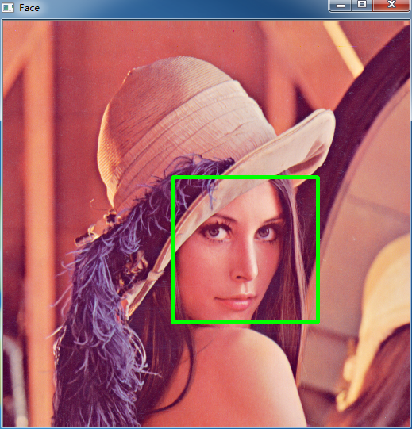

一个简单的人脸识别例子
人脸识别在一些场景中有很多的应用
这里是利用 OpenCV 自带的人脸检测 Cascade File 实现简单的人脸检测
import cv2 as cv
face_cascade = cv.CascadeClassifier("../haarcascades/haarcascade_frontalface_alt.xml")
cap = cv.VideoCapture(0)
scaling_factor = 0.5
while True:
ret, frame = cap.read()
frame = cv.resize(frame, None, fx=scaling_factor, fy=scaling_factor, interpolation=cv.INTER_AREA)
gray = cv.cvtColor(frame, cv.COLOR_BGR2GRAY)
face_rect = face_cascade.detectMultiScale(gray, 1.3, 5)
for (x, y, w, h) in face_rect:
cv.rectangle(frame, (x, y), (x+w, y+h), (0, 255, 0), 3)
cv.imshow("Face", frame)
c = cv.waitKey(1)
if c == 27:
break
cv.destroyAllWindows()
OpenCV 自带的人脸检测文件在 "..\opencv\sources\data\haarcascades" 路径下
程序中需要调用笔记本电脑摄像头，最终运行效果如下图：
